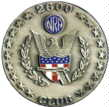
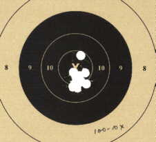
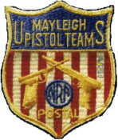
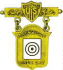

This treatise is in answer to comments a number of shooters
made to me not too long ago: "Is there a secret to shooting
high scores?" "What is the secret to shooting high
scores?" "I know you know the secret. Tell me the
secret!"
In answering, We will emulate, in part, the thoughts in the
lead editorial of the New York Sun, Sept. 21, 1897
"Yes, Virginia, there is a Santa
Claus."
Yes shooter, there IS a secret to shooting high pistol scores. It
exists as certainly as love,

generosity, and
devotion exist, and you know that they abound and give to your
life its highest beauty and joy. It exists as certainly as
persistence, hard work, sacrifice, and tenacity exist. You must
know also, that when these qualities abound, they give to ones
life its highest satisfaction of accomplishment. Alas! How dreary
would be the world if there were no God given attributes such as
these, and how dreary would be the world if there were no secret
to shooting high pistol scores. It would be as dreary as if there
were no Hagar the Horrible, no Superman, no James Bond, and no
2700s. And regarding the latter, we would have no "cause for
competition."
The secret to shooting high scores is slowly revealed and
compounded by the volume and density of the attributes of
persistence, hard work, sacrifice, and tenacity that the shooter
develops, in a combining overall attitude relative to the goal of
high scores. The secret is elusive; it appears and disappears in
direct relation to the volume and density of these attributes.
The more time and effort the shooter devotes to the goal, the
more the secret is revealed.

To have the secret revealed, the shooter
must sacrifice. Sacrifice his own, sometimes misguided,
conceptions about the vicissitudes of pistol shooting, and of
what is required to demand a high score. Sacrifice his time for
other endeavors, including family, other hobbies, and leisure
vacations. Sacrifice his money for decent equipment. Sacrifice
his convenience by traveling long distances, most of the time
alone. Sacrifice his comfort by shooting, both match and
practice, in the most severe types of weather, and in the most
difficult of places. Sacrifice his priorities by shooting ALL the
matches he can possibly attend, and shooting ALL the practice he
can, in utter disregard of the mental and physical cost.
Regarding sacrifice: "Being a Master shooter is doing all
the shooting he loves to do on the days he doesn't feel like
shooting!"
This sacrifice mandates hard work, with the accompanying
persistence and tenacity to carry it out. It must necessarily
occur without any encumbrances, mental or physical. The quest
must be an unrelenting pursuit of the goal. The shooter has to be
thinking of shooting most all of the time. The shooter's focus on
shooting must thoroughly possess him. In the morning prior to the
match or practice he must visualize the drills involved. In the
evening just before going to sleep he has to fire a match in his
minds eye, shot by shot! The shooter must also observe the
actions and attitudes of High Master shooters, and converse with
them so as to learn all he can.
These possessive thoughts must include not only the shooting
itself, but all the peripherals involved, such as equipment care,
ammo supply, travel equipment, and travel planning, etc. In
addition, the thoughts require analyzing new shooting techniques
and changes in equipment. In other words, the shooter must
constantly be concerned with the sum total of the entire drill
involved in his endeavor to unlock the secret.

Regarding
encumbrances: Hershel Anderson, USAMTU, multiple times National
Matches Winner and the shooter holding THE highest 2700 Record of
all time [2680-159x], had the least amount of physical
encumbrances of any shooter we have ever known. His equipment on
the line at the National Matches consisted of the match gun, two
magazines, match ammo, and a gun box with spotting scope. The gun
box was otherwise empty and unadorned! Simplicity at it's finest!
His mental encumbrances were, in all probability minimal or
nonexistent. He completed his Army career at the USAMTU as a
National Matches Winner, and then returned the following year for
another National Matches win as a civilian. Hershel's record
score was fired July 24, 1974 in Nashville, TN.
In regards to equipment: Gil Hebard, a National Matches Winner
['50s/'60s], and principal merchant supplier of pistol shooting
equipment in that era, remarked that a shooter may be able to
"buy his way to the secret". Gil may have been slightly
biased, but most knowledgeable shooters will find no real fault
in the fact that decent equipment is vital to success.

To have the secret revealed the shooter must
constantly demand of himself the possessive thoughts about
shooting. The reason for this is to load the sub-conscience, so
that many, or even all, parts of the entire shooting drill will
allow a robotic reaction on the part of the shooter, guaranteeing
the proficiency gain required to master the gun.
How about this scenario? Kim Dyer, USAMTU, Who fired a Women's
National 2700 Record at Eustis, Fla. in the '70s [all of 26 years
old and 98 lbs. at the time], when asked, "What do you do
with an unscheduled afternoon?" Said, "Well, I grab two
cans of hardball [ammo] and head to the range." Imagine! 500
or more rounds of hardball shot by a 98 pounder, in one
afternoon?
Tenacity at it's ultimate!
The secret to shooting high pistol scores is self-rewarding. It
is part of the competitive spirit that drives the shooter,
permeates the balance of his life, and offers him success in his
other pursuits. Once you attain it you will always remember it,
but it takes constant vigilance to keep it.
The secret to shooting high pistol scores is real and attainable,
but intangible, and not always readily explainable. But as sure
as there is love, generosity, devotion, persistence, hard work,
sacrifice, and tenacity in the human spirit, and as sure as there
are leprechauns in Ireland, Santa Claus, and the Easter Bunny,
there IS a secret to shooting high pistol scores!
"None of us will ever accomplish anything excellent or
commanding except when he listens to this whisper which is heard
by him alone." Ralph Waldo Emerson, poet.